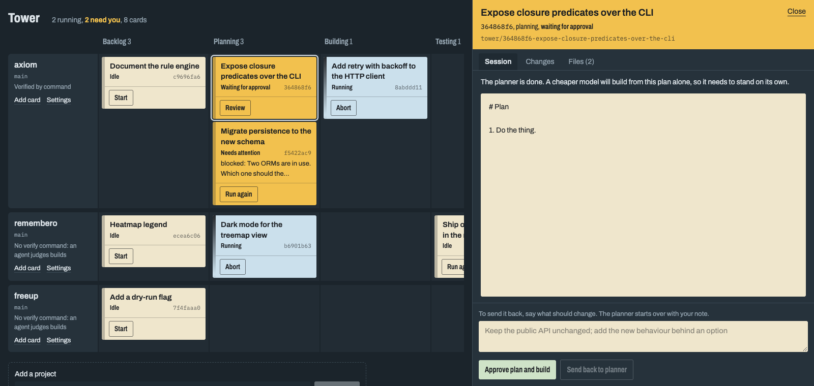

One board for every coding agent you run.
Tower runs pi sessions across all your projects from a single board. An expensive model plans, a cheap one builds, your test suite decides what passes, and you step in only where the decision is yours.
pi install git:github.com/rahult/tower
Then type /tower in any pi session.
- Resting
- An agent is working
- Needs you
- Tests passed
How a card moves
-
An expensive model plans
The planner explores your repository and writes
plan.md. It changes nothing. Planning defaults toanthropic/claude-fable-5-1, because a wrong plan is the costliest mistake a cheap builder can inherit. -
You approve the plan, or send it back
The card turns amber and waits. Read the plan on the board. Approve it, or write what should change and the planner starts over with your note.
-
A cheap model builds from the plan alone
Building is a fresh pi session that sees the plan and nothing of the planner's conversation. It works in the card's own git worktree and commits on the card's branch. Building defaults to
zai/glm-5.3. -
Your tests decide
Tower runs the project's verify command, for example
pnpm test && pnpm typecheck, and reads its exit code. A failure goes to a fresh builder together with the output. After three builds the loop stops and the card asks for you.

What it takes care of
- A worktree per card
- pi has no repository locking, so Tower gives every card its own git worktree and branch. Two cards can build in one project at once, and your checkout is never touched.
- A fresh session per stage
- Stages hand off through files such as
plan.md, never through a shared conversation. The builder starts with a clean context, and a reviewer never inherits the author's reasoning. - Locked-down sessions
- pi has no tool-approval step, so stages start with
--no-extensionsand without project trust. Both are opt-in per project. - A queue with caps
- A global limit and a per-project limit decide how much runs at once. The queue is stored, so it survives a restart.
- Resume after a restart
- Sessions cut off by a restart are marked interrupted. Resume reopens the same pi session and the transcript carries on where it stopped.
- Tokens first, dollars second
- Subscription models report a cost of zero, so every run shows its tokens, and a dollar figure only when there is a real one.

Install
You need pi, git, npm and Node 22.18 or newer.
pi install git:github.com/rahult/tower
Start pi from a shell that has your provider API keys, then type /tower. The first run builds the board, starts Tower in the background and opens it at
127.0.0.1:4700. Tower keeps running after you quit pi.
/tower |
Start Tower if needed and open the board |
|---|---|
/tower add <title> |
Add a card for the repository you are in. It becomes a project the first time |
/tower run <title> |
Add a card and start planning it |
/tower status |
What is running, and what is waiting for you |
/tower stop |
Stop Tower. Running sessions can be resumed next time |
pi packages run with full access to your machine, and Tower runs agents that execute shell commands in your repositories. Read the source before you install it.
The opinions are yours to change
Four small functions hold Tower's judgement calls. Each ships with a deliberately plain default and a comment that lays out the trade-off. The concurrency caps are enforced outside them, so a policy can only choose among cards that are allowed to start.
// packages/core/src/policy/scheduler.ts
// Keep every lane moving, or finish what is started?
export function pickNext(candidates, state) {
const [first] = [...candidates].sort((a, b) => a.queuedAt - b.queuedAt);
return first?.cardId ?? null;
}requiredGates- When may a small plan skip your approval?
decideAfterFailure- Stop early when the same error repeats? How much output does the builder get?
pickNext- Which waiting card gets the next free slot?
pickModel- Move to a stronger model after a failed build?
Where it stands
Tower is early. Planning, the plan gate, building, testing with the retry loop, the scheduler and restart recovery work today, and have been run end to end against real pi sessions. A card that passes its tests currently rests in Testing.
Still to build: a feedback gate with adversarial and SOLID review flows, pull requests with CI watching, moving to a stronger model on retry, cost roll-ups, and running any pi skill against a card. The design and roadmap are in the repository.